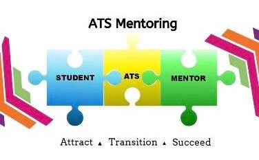

I've been involved with ATS Mentoring since September 2019. ATS Mentoring focuses on introducing first years to life at University by organising events, guided tours on the first week of University and sets up WhatsApp group chats to help them connect with their peers. These group chats are also used for first years to ask questions to their mentors who are usually 2nd/3rd/4th year students who study the same course as them. The ATS programme also helps HEAR (students underepresented in 3rd level education due to socio economic factors) and DARE (Students with disabilites) students by making them aware of the variety of resources available in NUI Galway.

Other than helping others, a major benefit of volunteering is being forced to get outside of your comfort zone. Giving guided tours to first years and organising large scale events made me much more confident and outgoing.
ATS Mentoring has a very active community on campus. By organising events such quiz nights and raffles there is a real sense of community among the volunteers.
NUI Galway presents ATS Mentors with a President's Award as well as the Employability award for our volunteer work with the University. Not only is it nice to recieve an award for our work but these awards also make your Curriculum Vitae stand out when looking for a job in the future.